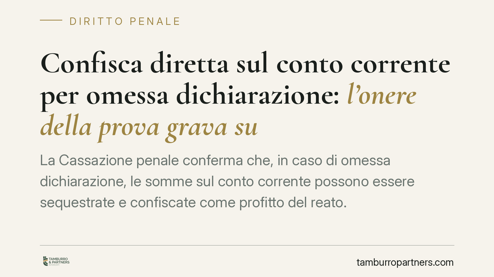

Confisca diretta sul conto corrente per omessa dichiarazione: l'onere della prova grava sul contribuente
La Cassazione penale conferma che, in caso di omessa dichiarazione, le somme sul conto corrente possono essere sequestrate e confiscate come profitto del reato. Il punto critico: spetta al contribuente dimostrare che quei fondi non esistevano alla scadenza fiscale. Un'inversione dell'onere probatorio che pesa concretamente su imprese e amministratori.

Il caso
La vicenda riguarda una società, Alfa BV, e il suo amministratore di fatto, indagati per omessa dichiarazione ai sensi dell'art. 5 del D.lgs. 74/2000. Il Tribunale di Lecco aveva disposto il sequestro preventivo delle somme presenti sui conti correnti, finalizzato alla successiva confisca. La difesa contestava la misura; la Corte di Cassazione l'ha confermata, chiarendo alcuni principi che meritano attenzione da parte di chi gestisce un'attività d'impresa.
Inquadramento normativo
L'art. 5 del D.lgs. 74/2000 punisce chi, al fine di evadere le imposte sui redditi o sul valore aggiunto, non presenta la dichiarazione annuale quando l'imposta evasa supera la soglia di legge. Si tratta di un reato tributario che, oltre alla sanzione detentiva, apre la strada agli strumenti ablativi patrimoniali.
Il riferimento centrale è l'art. 12-bis del medesimo decreto, che prevede la confisca del prezzo o del profitto del reato tributario, sia in forma diretta (sui beni che costituiscono il profitto stesso) sia per equivalente (su altri beni di valore corrispondente). La misura cautelare che anticipa la confisca è il sequestro preventivo dell'art. 321 c.p.p.
La distinzione tra le due forme non è teorica. Il denaro è un bene fungibile: la giurisprudenza ritiene che le somme di denaro presenti sul conto corrente costituiscano confisca diretta del profitto, anche quando non sia possibile tracciare che quelle esatte banconote provengano dall'evasione. È sufficiente che il denaro sia liquidamente disponibile.
Il nodo dell'onere della prova
Qui sta il passaggio più rilevante della pronuncia. Poiché la confisca sul conto corrente è qualificata come diretta, non è l'accusa a dover dimostrare il nesso tra le somme e il reato. È il contribuente a dover provare, se vuole sottrarsi alla misura, che il conto era incapiente al momento della scadenza fiscale, cioè che quelle somme non erano presenti quando l'imposta avrebbe dovuto essere dichiarata e versata.
Si tratta di un'inversione sostanziale dell'onere probatorio. Chi subisce il sequestro non può limitarsi a contestare genericamente il provvedimento: deve fornire elementi concreti sui movimenti del conto e sulla sua situazione patrimoniale alla data rilevante.
Implicazioni pratiche
Per imprese, amministratori di diritto e — attenzione — amministratori di fatto, le conseguenze sono immediate. La responsabilità penale tributaria non guarda alla veste formale: chi esercita in concreto i poteri gestori risponde del reato e può vedersi aggredire il patrimonio.
La liquidità sul conto è il bersaglio più esposto, perché è la forma di ricchezza più facilmente qualificabile come profitto diretto e più agevole da sequestrare. Un saldo attivo, anche se formatosi dopo la scadenza fiscale, rischia di essere colpito se non si dimostra la discontinuità rispetto al periodo del reato.
La documentazione contabile e bancaria diventa quindi decisiva. Estratti conto, bilanci, registri IVA e prospetti dei flussi finanziari non servono solo alla difesa nel merito del reato, ma alla difesa del patrimonio dal sequestro.
Cosa fare in concreto
- Verificate le scadenze dichiarative e conservate prova documentale della situazione dei conti correnti alla data di ogni adempimento fiscale rilevante.
- Ricostruite e archiviate i flussi finanziari distinguendo, quando possibile, le somme formatesi in periodi diversi da quello contestato: sarà questa la base per provare l'incapienza.
- In caso di notifica di un sequestro, non attendete: raccogliete immediatamente estratti conto e documentazione contabile e valutate l'impugnazione (istanza di riesame ex art. 324 c.p.p.).
- Se ricoprite un ruolo gestorio di fatto, siate consapevoli dell'esposizione penale e patrimoniale: la mancanza di una carica formale non protegge.
- Consigliamo di rivolgervi tempestivamente a un professionista per coordinare difesa penale e ricostruzione contabile, che nel contenzioso tributario-penale procedono insieme.
---
*Contributo informativo a cura di Tamburro & Partners - Avv. Giuseppe Tamburro. Non costituisce parere legale.*
Ogni condominio ha una storia a sé.
Se gestisci un'amministrazione e vuoi un confronto su una specifica questione condominiale, scrivi allo studio. Ti rispondiamo entro un giorno lavorativo.